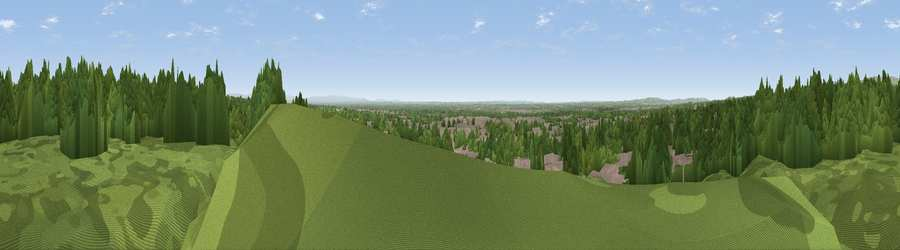

Viewpoint near Hag Fold
#20107 in England · top 51% of its area beats it · near Hag FoldThe view, rendered

A 360° render of this exact spot computed from the terrain model, tree cover and land cover — summer colours, afternoon light, calibrated against photographs of famous viewpoints. Real trees, hedges and buildings will differ in detail.
The panorama
Grey silhouette: terrain skyline in each direction (720 bearings, Earth curvature and refraction included). Dashed green: skyline with trees (+15 m) and buildings (+8 m) as obstacles. Blue strip: how far the ground is visible on each bearing.
Where the view opens
Wedge length = distance to the farthest visible ground on that bearing (vegetation-aware). Rings at 10, 25 and 50 km.
What fills the view
52% woodland · 32% built-up · 15% grassland ·
Angular shares of the visible panorama (visual magnitude), not map area. Landscape diversity 0.45 (0–1 Shannon).
Key numbers
More beautiful places nearby
The staircase of upgrades: each row has a higher view potential than everything closer. Driving times are estimates from straight-line distance, calibrated against real road routing — check an actual route before setting out.
| Place | Direction | Drive | Score |
|---|---|---|---|
| Top-o-Cow | NE · 3 km | ~7 min | 57.6 |
| Viewpoint near Horwich | NNW · 6 km | ~12 min | 61.0 |
| White Brow | NNW · 8 km | ~16 min | 82.9 |
| Warton Crag | NNW · 71 km | ~94 min | 83.2 |
| Viewpoint near Grange-over-Sands | NNW · 79 km | ~103 min | 83.4 |
| Viewpoint near Cartmel | NNW · 81 km | ~105 min | 87.0 |
| Viewpoint near Cartmel | NNW · 82 km | ~106 min | 87.2 |
| Viewpoint near Finsthwaite | NNW · 89 km | ~113 min | 90.3 |
53.53458, -2.48691 · source: screening · position refined by local search. Computed location — check access rights before visiting.